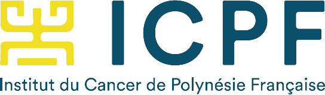

Création de l'Institut du Cancer de la Polynésie française
L’Institut du Cancer de Polynésie française (ICPF), créé en juillet 2021, est un établissement public dédié à la lutte contre le cancer.
Sa vocation est de faire progresser la lutte contre le cancer et de mettre à disposition des patients polynésiens les pratiques les plus récentes et les plus efficaces contre cette pathologie.
Depuis le 1er janvier 2022, l’ICPF assure les missions suivantes :
- Gestion du registre des cancers
- Mise en œuvre des actions de dépistage et de prévention contre les cancers
- Organisation et mise en œuvre de la coordination régionale des soins
- Organisation et mise en œuvre d’une direction de la recherche et de l’innovation.
L’ICPF fait partie du réseau UNICANCER, acteur majeur de la lutte contre le cancer.

Informations
Année : 2021
Catégories :
Mots-clés :
Etablissement,
Cancer
Sources :
Informations validées au 26/06/2025
Pour aller plus loin :
Aucune information complémentaire.